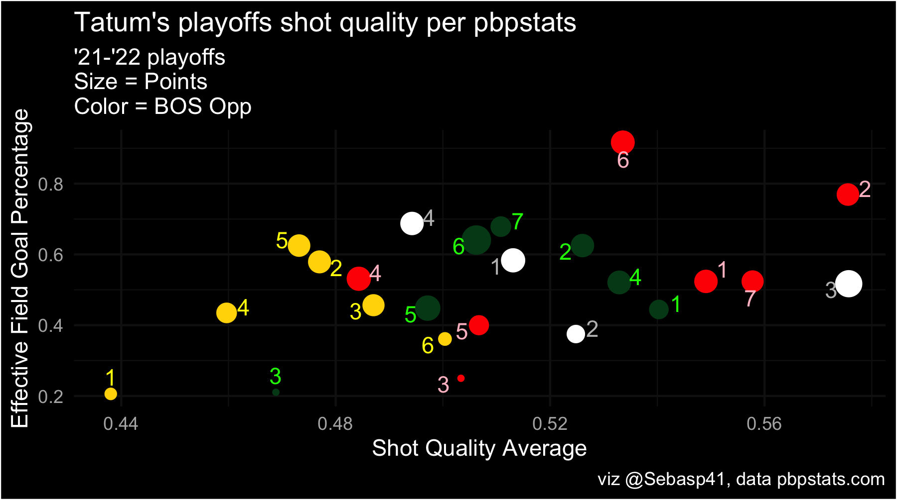

GSW staunchly defends Tatum in the Finals
What comes first, assuming a star player is cold or the opponent finding a good answer for said start player?

It’s technically not discernable from this first image above. It shows that Jayson Tatum’s Shot Quality and Effective Field Goal percentages were good during his playoff run, up until being consistently held up by the Golden State Warriors